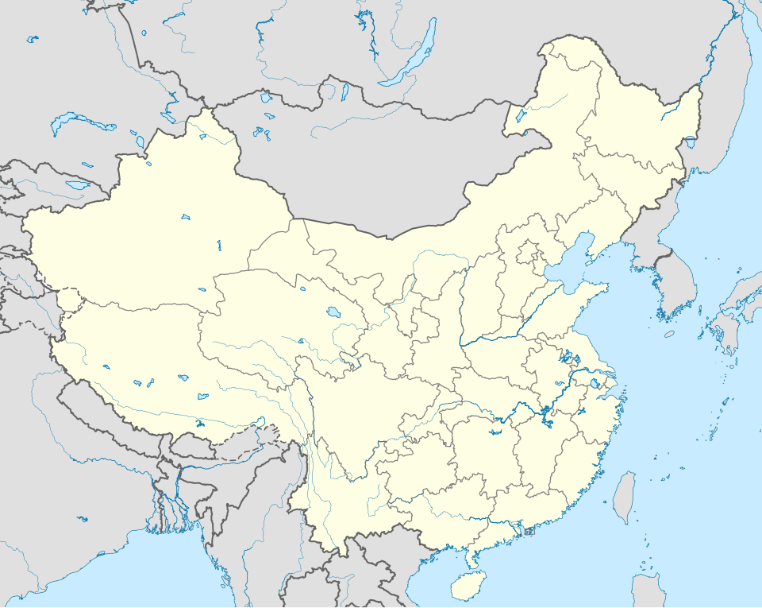
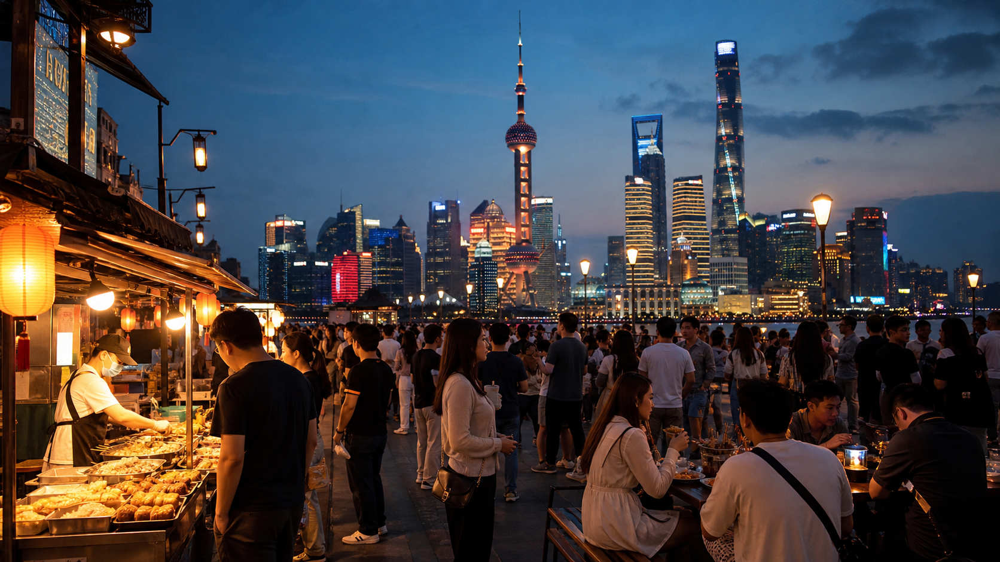

Москва → Пекин
Прилет в первый день маршрута
Открыть AviasalesПекин / Чжанцзяцзе / Шанхай
История и архитектура Пекина, горы и активные прогулки в Чжанцзяцзе, затем современный Шанхай с едой, небоскребами и городским темпом.
Темп поездки
Маршрут собран для первого знакомства с Китаем через три разных впечатления: короткий исторический старт, большую природу и современный мегаполис. Его удобно ставить на примерные даты с 20 октября: прилет в Пекин, вылет домой из Шанхая.
Карта маршрута
Кликайте по точкам: каждая показывает город, сколько дней там провести и зачем он нужен в маршруте. Линии отмечают главные перелеты внутри Китая.

Программа

Логистика
Самый удобный вариант - искать сложный маршрут: Москва - Пекин и Шанхай - Москва. Внутри Китая удобнее заложить два перелета: Пекин - Чжанцзяцзе и Чжанцзяцзе - Шанхай. Так маршрут остается насыщенным, но не превращается в длинную дорогу.
Прилет в первый день маршрута
Открыть AviasalesВылет на десятый день или утром после него
Открыть AviasalesОтели
Для первой поездки лучше брать отели рядом с метро и главными прогулочными районами: так меньше времени уходит на дорогу и проще возвращаться вечером.
Что входит
Бюджет на человека
Точная цена билетов меняется, поэтому расчет сделан интерактивным: можно подставить найденную на Aviasales стоимость.